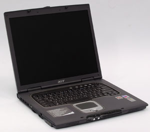
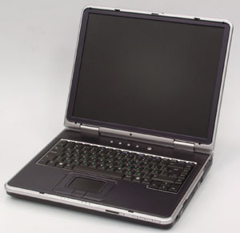
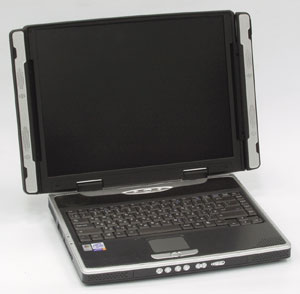
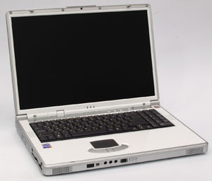
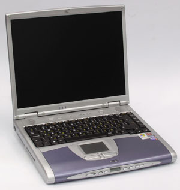
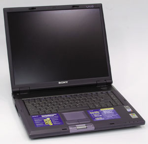

Олег Денисов, Сергей Назаров
В числе важнейших характеристик ноутбуков пользователи со стажем, несомненно, прежде всего назовут габариты и массу системы, вслед за ними - размер диагонали ЖК-экрана. Тип процессора они, скорее всего, поставят лишь на третье место и будут по-своему правы. Однако сегодня при выборе переносного ПК, пожалуй, труднее всего "разобраться" именно с процессором - в современных ноутбуках применяется множество моделей как мобильных, так и настольных процессоров, причем в последнее время их число заметно возросло.
Технологические новации
За прошедший год в классе настольных процессоров начального уровня модели Celeron на ядре Tualatin (частота системной шины 100 МГц, ядра - до 1,40 ГГц), Pentium III на Tualatin (133 МГц, до 1,33 ГГц) и Pentium 4 на ядре Willamette (400 МГц, до 2,0 ГГц) были вытеснены новыми Celeron на ядре Northwood (400 МГц, до 2,60 ГГц, первые модели этого семейства выпущены осенью 2002 г.). Процессоры среднего класса Pentium 4 на ядре Northwood (400 МГц, до 2,6 ГГц) заняли промежуточное положение между моделями начального и среднего уровня. "Топовые" модели Pentium 4 на ядре Northwood (533 МГц, до 2,8 ГГц) перешли в разряд средних, а новые Pentium 4 на ядре Northwood со встроенными средствами Hyper-Threading - модель с частотой 3,06 ГГц с 533-МГц системной шиной и процессоры 2,40-3,20 ГГц с 800-МГц системной шиной - заняли лидирующие позиции.
В "стане" мобильных процессоров ситуация еще сложнее. Относившиеся к среднему классу Pentium III-M Mobile на ядре Tualatin (133 МГц, до 1,33 ГГц) и новые Celeron Mobile на Northwood (400 МГц, до 2,4 ГГц) вытеснили старые мобильные процессоры начального уровня Celeron Mobile на Tualatin (133 МГц, до 1,33 ГГц). Модели высшего класса Pentium 4-M Mobile на Northwood с 400-МГц системной шиной (до 2,2 ГГц) перешли на средний уровень, уступив первенство процессорам нового семейства Pentium 4 Mobile на Northwood с 533-МГц системной шиной (до 3,2 ГГц) и встроенными средствами Hyper-Threading (важно, однако, подчеркнуть, что младшая 2,4-ГГц модель и ранние модификации Pentium 4 Mobile с частотой 2,66, 2,8 и 3,06 ГГц их не имеют).
Но событием года, конечно, стал выпуск Pentium M - первого "истинно мобильного" процессора для ноутбуков от Intel. Напомним, что другие мобильные процессоры Intel - по сути менее "прожорливые" модификации настольных.
Pentium M появился на свет в результате "скрещивания" усовершенствованного ядра Pentium III (Tualatin) с увеличенным до 1 Мбайт кэшем L2, "позаимствованной" у Pentium 4 системной шины 400 МГц и расширенного набора инструкций SSE2 с некоторыми новыми средствами экономии энергии (пониженное энергопотребление системной шины, отключение неиспользуемых блоков кэша L2, улучшенный механизм предсказания переходов, средства Micro-Op Fusion и Advanced Stack Management, сокращающие число выполняемых микроопераций) и, наконец, более совершенными средствами Enhanced Intel SpeedStep и Thermal Monitor, на которых следует остановиться подробнее.
Intel SpeedStep
Как известно, первыми процессорами для ноутбуков от Intel, оснащенными средствами "горячего переключения" частоты и напряжения питания ядра Intel SpeedStep, были Pentium III Mobile на ядре Coppermine. Эта версия SpeedStep предусматривает два режима работы процессора - со штатными частотой и напряжением питания ядра, обеспечивающий максимальную производительность (Maximum Performance Mode), и режим энергосбережения (Battery Optimized Mode) с пониженными частотой и напряжением.
Вторая модификация, Enhanced Intel SpeedStep, первоначально встраивалась в Pentium III-M Mobile на ядре Tualatin, позднее - в Pentium 4-M Mobile и Pentium 4 Mobile. Несмотря на "солидное" название, она также обеспечивает только два режима работы процессора.
Наконец, третья, значительно улучшенная версия SpeedStep появилась в процессорах Pentium M. Она предусматривает от двух до пяти (в зависимости от модели) "горячих" режимов работы процессора с разными частотами и напряжениями питания ядра, что, конечно, позволяет более гибко управлять энергопотреблением системы. Как ни странно, название новой модификации осталось прежним - Enhanced Intel SpeedStep.
Попутно подчеркнем, что все настольные процессоры Intel и, что важно, мобильные процессоры Celeron не оснащаются средствами энергосбережения SpeedStep.
Thermal Monitor
Встроенные в процессор средства Thermal Monitor обеспечивают "комфортный" температурный режим процессора и "срабатывают" в двух случаях. Если температура ядра повышается до максимально допустимой рабочей температуры (например, 100°C для Pentium 4-M и Pentium M; продолжительная работа при температуре ядра выше этого порога сокращает время жизни кристалла), средства Thermal Monitor начинают "тормозить" процессор, модулируя задающий тактовый сигнал ядра с глубиной 30-50% (часть тактовых импульсов "вырезается", и ядро процессора соответственно работает на 30-50% медленнее). У Pentium M средства Thermal Monitor улучшены и предусматривают еще один механизм торможения процессора - "горячее" переключение рабочего режима с помощью средств Enhanced Intel SpeedStep, тогда как другие модели с Thermal Monitor пока не умеют "замедлять" собственное ядро таким образом.
Кроме того, средства Thermal Monitor обеспечивают принудительную остановку процессора при разогреве ядра выше аварийной температуры (125-135°C); в противном случае физическая структура кристалла процессора может быть необратимо нарушена.
Важно отметить, что средства Thermal Monitor и оба температурных порога "прошиты" в процессоре на аппаратном уровне и работают независимо от внешнего аппаратного и программного окружения; правда, Thermal Monitor можно отключать-включать программными средствами.
Средства Thermal Monitor работают параллельно и никак не связаны со встроенным в процессор термодиодом (последний в обязательном порядке встраивается во все современные процессоры Intel и обычно измеряет температуру ядра с помощью внешнего контроллера мониторинга состояния системы). Кроме того, они появились в процессорах Intel только начиная с моделей Pentium 4 на ядре Willamette. Поэтому, например, внутреннюю температуру Celeron и Pentium III на ядре Coppermine и Tualatin можно контролировать только с помощью связки внешний контроллер мониторинга состояния - встроенный термодиод. Такая связка, конечно, срабатывает не так быстро и обеспечивает менее надежную защиту, чем Thermal Monitor.
Платформа Centrino
Что касается позиционирования Pentium M, то он выпускается сегодня в трех вариантах. Пять "обычных" моделей с частотой 1,30-1,70 ГГц и рассеиваемой мощностью до 22,0-24,5 Вт можно классифицировать как процессоры с низким энергопотреблением для ноутбуков среднего класса (для сравнения: 2-ГГц мобильный Celeron или Pentium 4-M рассеивает до 32 Вт тепловой энергии). Две Low Voltage-модели с частотой 1,10-1,20 ГГц, пониженным напряжением питания и энергопотреблением до 12 Вт - экономичные процессоры для систем начального уровня. Наконец, две суперэкономичные модели Ultra Low Voltage с частотой 900 МГц - 1,0 ГГц и рекордно низкой потребляемой мощностью (всего лишь 7 Вт) предназначены, очевидно, для супертонких и сверхлегких ноутбуков.
Еще раз подчеркнем, что малое энергопотребление Pentium M позволяет не только увеличить время автономной работы, но и сократить размеры охлаждающих радиаторов и вентиляторов, уменьшив тем самым габариты и массу системы. Поэтому появление Pentium M - в первую очередь модификаций с пониженным энергопотреблением - фактически дает "зеленый свет" малогабаритным, легким и "долгоживущим" ноутбукам и позволяет говорить о качественном скачке на рынке переносных систем.
Кстати, грамотная маркетинговая политика продвижения Pentium M - еще один солидный плюс в пользу массового выпуска систем на базе этого процессора. Intel предложила изготовителям ноутбуков не просто новый процессор, но построенную на его основе мобильную платформу Centrino. Последняя, помимо Pentium M, включает семейство из трех мобильных наборов микросхем (НМС) Intel 855 и соответствующий стандарту 802.11b мини-PCI модуль беспроводной связи Intel PRO/Wireless LAN 2100 3B Mini PCI Adapter.
Базовый НМС Intel 855PM обеспечивает работу с памятью DDR200/266/333 SDRAM и оборудован внешним интерфейсом AGP 4X для подключения дискретного графического контроллера. Его модификация, Intel 855GM, позволяет применять память DDR200/DDR266 SDRAM, оснащен встроенным графическим ядром Intel Extreme Graphics 2 с рабочей частотой до 200 МГц, но не имеет внешнего интерфейса AGP. Наконец, Intel 855GME может функционировать в связке с памятью DDR200/266/333 SDRAM, также оснащен встроенным графическим ядром Intel Extreme Graphics 2, но с максимальной частотой до 250 МГц, и позволяет подключить внешний графический контроллер по интерфейсу AGP 4X.
В остальном функциональность всех трех НМС одинакова - обеспечивается работа с системной шиной 400 МГц, организация одноканального ОЗУ на одном или двух модулях памяти общей емкостью до 2 Гбайт, ECC-коррекция ошибок при передаче данных по шине памяти и работа в связке с концентратором ввода-вывода Intel 82801DBM (ICH4-M). Последний - это мобильная версия ICH4; он позволяет подключить до шести PCI мастер-устройств, оборудован двумя каналами Ultra ATA/100, шестью портами USB 2.0, сетевым LCI-контроллером (для реализации сетевого интерфейса к нему необходимо подсоединить внешний 10/100 Мбит/с Ethernet-контроллер, Intel рекомендует для этой цели микросхемы Intel 82562ET/EM) и контроллером AC'97 (соответствует спецификации AC'97 2.3, обеспечивает 20-бит кодирование звука с частотой дискретизации до 48 кГц, позволяет подключить до трех кодеков, например, два звуковых и один модемный, и организовать независимую работу семи каналов ввода-вывода данных - два микрофонных входа, канал PCM-выхода, обеспечивающий вывод 2-, 4- или 6-канального звука, два канала для обмена данными с модемным кодеком и один канал S/PDIF-выхода).
При таком разнообразии процессоров для переносных компьютеров при покупке ноутбука необходимо точно знать, какой процессор в нем установлен, и, конечно, учитывать сложившуюся на сегодня "раскладку" в секторе настольных и мобильных процессоров. В ряду последних Pentium 4 Mobile с 533-МГц системной шиной и Hyper-Threading - это более долгоживущая альтернатива настольным процессорам высшего класса; Pentium 4-M Mobile с 400-МГц системной шиной и Pentium III-M Mobile на ядре Tualatin в паре с Celeron Mobile на ядре Northwood - модели среднего и начального уровня; и наконец, Pentium M предназначен для сверхэкономичных ноутбуков среднего и начального класса.
Другие подсистемы
Нельзя не отметить заметный прогресс графической и дисковой подсистемы переносных ПК. За прошедший год компания ATI выпустила два новых мобильных графических процессора - DX9-модель M10 (другое название - Mobility Radeon 9600) для систем высшего и среднего класса и DX8 Mobility Radeon 9200 - для ноутбуков начального уровня. Nvidia, в свою очередь, разработала четыре новые мобильные DX9-модели: GeForce FX Go 5650 и 5600 - для самых мощных ноутбуков, 5200 - для систем среднего класса и 5100 - для недорогих систем начального уровня. Следует подчеркнуть, что наличие разъема для вывода изображения на ТВ-приемник стало фактически стандартом - год назад его встраивали далеко не во все ноутбуки.
Что же касается 2,5-дюйм жестких дисков, то за прошедший год на рынке появились первые модели со скоростью вращения 7200 об./мин, однако большинство переносных ПК пока по-прежнему оснащается накопителями на 4200 и 5400 об./мин. Максимальная емкость мобильных жестких дисков возросла с 60 до 80 Гбайт.
Наконец, необходимо сказать еще о некоторых изменениях в конструкции ноутбуков за последнее время. Прежде всего на рынке появились портативные "пишущие" DVD-накопители - их уже можно обнаружить в дорогих "навороченных" моделях или дополнительно установить в недорогой ноутбук. Наличие порта IEEE 1394 стало стандартом де-факто, он есть практически во всех моделях. Все большую популярность завоевывают накопители на флэш-картах и Wi-Fi-модули беспроводной связи (последние, кстати, практически вытеснили Bluetooth-адаптеры), которые сегодня довольно часто включаются в базовую конфигурацию ноутбуков среднего и высшего класса. Флоппи-дисковод, наоборот, крайне редко встраивается в переносные ПК и чаще всего предлагается как дополнительный внешний USB-аксессуар.
Похожая ситуация - с низкоскоростными периферийными интерфейсами. Сегодня ноутбуки с полным набором "медленных" портов (PS/2, последовательный, параллельный, инфракрасный) встречаются редко, поскольку большая часть периферийных устройств оснащается USB-интерфейсом. Чаще всего у ноутбуков отсутствует последовательный порт, реже - PS/2 или инфракрасный, и иногда - параллельный. И это следует обязательно учитывать при выборе, поскольку низкоскоростные интерфейсы "отживают" не так быстро, и, возможно, для ноутбука без какого-либо "медленного" порта придется приобретать адаптер-переходник (например, USB-COM, USB-LPT или USB-IrDA). Но такое решение не всегда бывает удачным - например, некоторые "капризные" устройства могут отказаться работать с эмулированным последовательным или параллельным портом, и, кроме того, "честный" низкоскоростной порт работает все-таки надежнее переходника.
Наконец напомним, что уже год назад все ноутбуки в обязательном порядке оснащались 10/100-Мбит/с Ethernet-интерфейсом и 56-Кбит/с модемом, и это правило остается в силе по сей день, а в некоторые модели высшего класса уже встраивается скоростной гигабитный сетевой интерфейс.
Тестирование ноутбуков
Мы предложили ведущим поставщикам ноутбуков предоставить нам для тестирования переносные компьютеры трех категорий: экономического класса - с ценой до 1300 долл., бизнес-класса - предназначенные для корпоративных пользователей, класса "замена настольного ПК" - с 15-17-дюйм экраном, жестким диском объемом не менее 30-40 Гбайт и большим количеством встроенных устройств и внешних портов.
В результате было получено 15 машин: две модели от представительства компании Acer, три от компании ASUSTeK, одна модель Sony от "Индэл" и по три модели собственного производства от компаний "Нексус", "НКА-Групп" и Rover Computers (выпускаются соответственно под торговыми марками Bliss, iRU и RoverBook).
В этом номере мы публикуем первую часть обзора по результатам тестирования ноутбуков - в нее включены только "тяжеловесные" стационарные модели. С итогами испытаний ноутбуков двух других классов читатели смогут ознакомиться в следующем номере "BYTE/Россия".
Методика тестированияДля определения общей производительности системы мы пользовались пакетом Multimedia Content Creation Winstone 2003 1.0 для измерения быстродействия при работе с популярными мультимедиа-приложениями и ПО для создания Web-контента и Business Winstone 2002 1.0.1 при работе с офисными приложениями. Производительность графической подсистемы при работе с 3D-играми измерялась средствами пакета MadOnion 3DMark2001 SE Build 330 - для настроек этого ПО Frame Buffer и Z-Buffer были соответственно выбраны значения Double и 16 bit. Для оценки скорости работы процессора и системной памяти использовались тесты из состава ПО SiSoft Sandra Standard 2003.7.9.73. Продолжительность работы ноутбуков от батареи измерялась с помощью пакета Business Winstone 2002 BatteryMark 1.0. Все тесты выполнялись под управлением ОС Microsoft Windows XP Professional English с Service Pack 1a при видеорежиме с 16-бит глубиной цвета и максимальным разрешением ЖК-панели. Кроме того, поскольку производительность графических подсистем сравнивалась при разрешении 1024?768, на некоторых ноутбуках были дополнительно выполнены тесты из пакета 3DMark2001 с этим разрешением. |
Характеристики протестированных ноутбуков и результаты тестирования приведены в таблицах.
Acer TravelMate 803LMi
Оригинальный внешний вид уже давно стал визитной карточкой ноутбуков Acer. И Acer TravelMate 803LMi подтверждает правило - дизайн этой модели выдержан в том же элегантном стиле.

Но больше всего, пожалуй, в 803LMi привлекает "правильный" выбор платформы - ноутбук выдержан в духе Centrino и базируется на связке Intel Pentium M 1,6 ГГц и НМС Intel 855PM, к которой добавлен Wi-Fi-модуль Intel PRO/Wireless 2100. Следствие - небольшая масса системы (2,69 кг) и продолжительное время работы от батареи - 4 ч 13 мин.
Следует обязательно упомянуть довольно мощный графический контроллер ATI Mobility Radeon 9000 и "навороченный" оптический накопитель DVD-RW Pioneer DVR-K11 (установлен в универсальный отсек для сменных модулей с горячей заменой - они фиксируются защелкой на задней панели - и может быть заменен на другой оптический накопитель, второй жесткий диск или вторую батарею). Отметим также наличие разъема для подключения репликатора портов (поставляется дополнительно), параллельного и ИК-порта, звукового линейного входа, кармашка для визитки на нижней панели, двух фиксирующих защелок на крышке ноутбука. На передней панели расположены кнопки включения-выключения, индикаторы работы беспроводных модулей Wi-Fi и Bluetooth (последний устанавливается дополнительно) и индикаторы режима работы и зарядки батареи. Все индикаторы видны снаружи при закрытой крышке. Есть клавиши прокрутки в четырех направлениях и множество кнопок быстрого запуска приложений (две кнопки для запуска системной почтовой программы и браузера и две программируемые). Еще хотелось бы упомянуть удобное расположение USB-портов, порта IEEE 1394 и звуковых разъемов (все выведены на левую панель) и возможность быстрой замены жесткого диска и модулей памяти - они спрятаны соответственно в доступных снаружи отсеках на левой и нижней панели (к сожалению, для ЦП подобного отсека не предусмотрено). Кстати, объем ОЗУ этого ноутбука можно нарастить до 2 Гбайт.
В ноутбук встроены три фирменные разработки Acer, на которых следует остановиться подробнее, - подсистема безопасности на смарт-картах, расширенный набор горячих функциональных комбинаций клавиш и оригинальная клавиатура. 803LMi комплектуется программным комплексом PlatinumSecret, работающим в связке со смарт-картами, - последние загружаются во встроенный накопитель для карт этого типа. В набор PlatinumSecret входят три программы: PlatinumPAS - для контроля доступа на аппаратном уровне до запуска POST-теста (если соответствующая смарт-карта не вставлена в накопитель, то система не будет инициализироваться и ноутбук не запустится), PlatinumSecure - контролирует доступ на уровне ОС и может шифровать/дешифровать файлы, PlatinumKey - позволяет хранить и считывать со смарт-карт пароли доступа к Web-ресурсам, требующим авторизации.
Помимо стандартных "горячих" комбинаций клавиш, обеспечивающих включение режима ожидания, переключение вывода изображения, отключение динамиков, управление яркостью экрана и громкостью и "гашение" ЖК-дисплея (последнее, кстати, реализовано далеко не во всех ноутбуках), 803LMi оборудован дополнительными комбинациями для выключения указательного устройства (сенсорной панели TouchPad), быстрого вызова вкладок с системными настройками и настройками энергосбережения и даже для вывода на экран справочной информации о собственно функциональных комбинациях клавиш.
Наконец, клавиатура у 803LMi сконструирована весьма оригинально - выгнута полукругом вниз, так что ее клавиши "расходятся" под углом 5° по направлению к передней панели. На первый взгляд такое решение весьма привлекательно, поскольку повышает эргономичность работы, однако его практичность спорна - привыкнув к нестандартному "ощущению" полукруглой клавиатуры и бессознательно скорректировав моторику рук, пользователи вряд ли смогут работать с обычными "прямыми" клавиатурами так же свободно, как раньше. Из недостатков отметим маленький размер клавиш верхнего ряда (правда, они разделены довольно значительными просветами), однорядную клавишу Enter, совмещенные клавиши Home/Page Up и End/Page Down (кстати, они "втиснуты" непосредственно над блоком клавиш-стрелок, поэтому последний не отделен от остальных клавиш) и, что крайне неудобно, изображение англо- и русскоязычных символов одним цветом - белым на черном фоне. В итоге можно заключить, что клавиатура у 803LMi выглядит, конечно, очень стильно, но работать с ней неудобно.
К недостаткам 803LMi следует также отнести отсутствие порта PS/2, последовательного порта, разъема S/PDIF-выхода, блока кнопок для автономного проигрывания аудиодисков и неудобное расположение ИК-порта - на передней панели.
По меркам, предъявляемым к современным ноутбукам класса "замена настольного ПК", 803LMi оборудован довольно маломощным процессором и в тестах на скорость работы процессора и ОЗУ и в интегральном мультимедиа-тесте CC Winstone занял предпоследнее место. Зато он "отыгрался" в тесте 3DMark2001 и интегральном офисном тесте Business Winstone, показав в них третий результат.
Конечно, 803LMi нельзя отнести к категории настольных ноутбуков с рекордной производительностью, но и медленным его тоже не назовешь - по крайней мере, с офисными программами и играми он "расправляется" весьма быстро. Плюс к тому - наличие накопителя DVD-RW, отличная "коммуникабельность", оригинальная подсистема безопасности на смарт-картах, стильный дизайн, небольшая масса, длительная работа в автономном режиме и двухлетняя гарантия на ноутбук и компоненты.
Подчеркнем, однако, что модель 803LMi недешева - 2644 долл., не оборудована последовательным портом и S/PDIF-выходом и оснащена выгнутой клавиатурой, которая, конечно, обеспечивает хорошую эргономику, но ухудшает технику работы с "прямыми" клавиатурами.
ASUS L5800GM
Ноутбук ASUS L5800GM построен на базе новейших и дорогостоящих компонентов, среди которых настольный процессор Intel Pentium 4 3,20 ГГц с 800-МГц системной шиной и встроенными средствами Hyper-Threading, НМС Intel 865PE с двухканальным контроллером DDR-памяти, графический контроллер Nvidia GeForce FX Go 5650 с 64-Мбайт локальной DDR-видеопамятью, жесткий диск Toshiba MK8025GAS с рекордной для накопителей этого типа емкостью - 80 Гбайт, накопитель DVD-RW Toshiba SD-R6012 (прочие характеристики см. в таблице). Все это привело к весьма высокой цене системы, даже по меркам настольных ноутбуков, - 2890 долл.
Функциональность L5800GM также расширена благодаря встроенному флэш-накопителю для карт и флоппи-дисководу, наличию двух гнезд для плат PC CardBus, четырех USB-портов (они, кстати, очень грамотно размещены - по одному порту на боковых панелях и два на задней панели), параллельного, последовательного и ИК-порта, порта IEEE 1394, звукового линейного входа и S/PDIF-выхода.

Список достоинств L5800GM продолжают фирменная кнопка Power Gear - включает-выключает специальный режим экономии энергии с пониженной скоростью работы процессора и яркостью экрана (напомним, что в L5800GM установлен настольный процессор без встроенных средств энергосбережения), блок кнопок для автономного проигрывания аудиодисков, специальная кнопка для отключения сенсорной панели мыши, расположенные на верхнем ребре передней панели и всегда заметные снаружи восемь индикаторов (режима питания, зарядки батареи, получения электронной почты - рассчитан на работу только с ПО Microsoft, работы беспроводной связи, обращения к накопителю - оптическому или жесткому диску, включения режимов клавиатуры Num Lock, Caps Lock и Scroll Lock), две фиксирующие защелки на крышке ноутбука, горячие функциональные комбинации клавиш включения-выключения модуля беспроводной связи и ЖК-дисплея и кармашек для визитки на нижней панели.
Конструкция L5800GM предусматривает быструю модернизацию съемного оптического накопителя и спрятанных в отсеках на нижней панели жесткого диска и процессора. К сожалению, модули памяти расположены под клавиатурой и добраться до них непросто.
Конструкция клавиатуры у L5800GM продумана отлично. Расположение клавиш стандартное и очень удобное. "Уменьшенные" клавиши верхнего ряда невелики, но между ними оставлены достаточно широкие просветы. Клавиши Tab, Caps Lock, Backspace и правая Shift достаточно длинные, клавиша Enter - двухрядная. Англо- и русскоязычные символы изображены соответственно белым и светло-зеленым цветом на черном фоне и отлично читаются. Рабочая поверхность ноутбука - и вместе с ней, конечно, клавиатура - немного наклонена вперед (за счет разной высоты передней и задней панели), что очень удобно. Пожалуй, из недостатков можно отметить только немного укороченную левую клавишу Shift.
К недочетам в конструкции L5800GM - также несущественным - можно еще отнести отсутствие порта PS/2 и неудобное расположение ИК-порта (на передней панели).
В комплект поставки L5800GM включается подробное руководство пользователя на русском языке, видеопереходник S-Video - коаксиал, оптическая мышь, сумка для транспортировки ноутбука, модемный шнур и ОС Microsoft Windows XP Home Edition (RU). Дополнительно можно приобрести внешний USB-флэш-накопитель 7-in-1 для карточек CF/Micordrive/SM/MMC/SD/MS/MS Pro, внешний USB-концентратор с четырьмя USB-портами, коммуникационный USB-кабель для сетевого соединения с другим ПК, переходники USB-COM и USB-LPT, двухдиапазонный PC CardBus-адаптер беспроводной связи SpaceLink Cardbus Card стандарта 802.11a/b, внешний однодиапазонный USB-адаптер беспроводной связи стандарта 802.11b и адаптер питания от бортовой сети автомобиля/самолета.
L5800GM построен на базе НМС Intel 865PE, который позволяет организовать двухканальную системную DDR-память. Но в предоставленном для тестирования экземпляре этой модели был установлен только один 512-Мбайт модуль памяти, и ОЗУ работало в одноканальном режиме. Поэтому в тестах на скорость работы системной памяти L5800GM выступил вдвое медленнее своих возможностей и сильно проигрывал ноутбуку RoverBook Explorer D585W (эти модели построены на базе одного процессора и НМС). Как следствие, в интегральных тестах Business Winstone и CC Winstone L5800GM продемонстрировал довольно скромные для такой системы результаты и, несмотря на лучшие показатели в процессорных тестах, занял соответственно лишь 4-е и 3-е место.
Интересно отметить, что при дополнительном прогоне тестов Business Winstone и CC Winstone в двухканальном режиме (один 512-Мбайт модуль памяти был заменен на два по 256 Мбайт) и с увеличенным до 1 Гбайт ОЗУ (соответственно два модуля по 512 Мбайт) этот ноутбук показал, конечно, заметно лучшие результаты, но все-таки отставал от D585W. В этом, скорее всего, виноват установленный в L5800GM медленный жесткий диск на 4200 об./мин (в D585W установлен накопитель на 5400 об./мин).
Подчеркнем также, что в графическом тесте 3DMark2001 L5800GM был бесспорным лидером, причем производительность видеоподсистемы заметно подросла при переходе от одноканального к двухканальному режиму работы ОЗУ, но осталась неизменной при наращивании его объема с 512 Мбайт до 1 Гбайт.
Итак, возможности L5800GM, конечно, впечатляют - высокая производительность, отличная оснащенность и удобная конструкция. Плюс к тому умеренная масса (легким L5800GM назвать нельзя - 3,9 кг, однако он весит заметно меньше тестировавшихся моделей-"тяжеловесов" с экраном 16-17 дюймов - 4,2-4,5 кг) и срок гарантии - два года на ноутбук и компоненты. Так что если вам нужен мощный настольный ноутбук, который периодически будет использоваться в "полевых" условиях, то L5800GM может стать неплохим выбором. Отметим, однако, что этот ПК очень недолго способен "продержаться" на батарее - 1 ч 09 мин и пока очень дорог.
Bliss 6050E
Bliss 6050E можно с ходу отнести к разряду стационарных систем - ноутбук оборудован 16-дюйм экраном с разрешением 1600х1200, мощным настольным процессором Intel Pentium 4 3,06 ГГц и быстрым графическим контроллером ATI Mobility Radeon M9-P, 1 Гбайт ОЗУ, жестким диском Fujitsu MHS2060AT 60 Гбайт и комбинированным оптическим накопителем DVD-ROM/CD-RW. Ноутбук быстро разряжает батарею (время автономной работы в тесте Business Winstone BatteryMark - 1 ч 32 мин) и весит 4,5 кг. Поэтому для работы в дорожных условиях эта система не годится, хотя изредка ее можно использовать и в таком качестве.
Но, конечно, главная особенность 6050E - нестандартный дизайн и усиленная звуковая подсистема. По бокам крышки ноутбука размещены две поворотные панели, и в каждой встроено два динамика - широкополосный и высокочастотный. При этом аудиоподсистема 6050E остается двухканальной, но разделение частот на каждом канале улучшает качество звучания. Попутно отметим, что при транспортировке поворотные панели "схлопываются", накрывая боковые панели, и фиксируют крышку ноутбука.

К положительным сторонам 6050E следует также отнести наличие параллельного порта и ИК-порта, четырех USB-портов (кстати, все расположены на правой панели, что весьма удобно), порта IEEE 1394, кнопок для автономного проигрывания аудиодисков (вынесены на переднюю панель), двух расположенных на верхнем ребре левой панели и всегда доступных снаружи индикаторов (совмещенный индикатор зарядки батареи/работы в режиме ожидания и индикатор работы в штатном режиме), горячей функциональной комбинации клавиш для свертки-развертки изображения (при установке нестандартного разрешения позволяет развернуть изображение на весь экран или сжать его до физического разрешения), легкость модернизации (сменный оптический накопитель - фиксируется защелкой на нижней панели, три отсека на нижней панели с жестким диском, процессором и модулями памяти) и двухлетний срок гарантии на ноутбук и компоненты.
Из недостатков у 6050E были отмечены отсутствие порта PS/2, последовательного порта, линейного входа и S/PDIF-выхода, неудобное расположение звуковых разъемов и ИК-порта - на задней панели, отсутствие индикаторов работы беспроводной связи и получения электронной почты и горячих комбинаций клавиш включения-выключения ЖК-дисплея и беспроводной связи и включения режима ожидания.
Конструкция и расположение клавиш клавиатуры у 6050E продуманы очень хорошо - из недостатков здесь можно отметить, пожалуй, только однорядную клавишу Enter и "изъятую" из верхнего правого угла клавишу Insert (она находится в нижнем ряду слева от клавиши пробела). Но раскраска клавиатуры оставляет желать лучшего - и англо-, и русскоязычные символы изображены белым и плохо читаются.
В комплект поставки 6050E включается печатное руководство пользователя на русском и английском языках, модемный шнур, сумка для транспортировки ноутбука, ОС Microsoft Windows XP Home Edition (RU) вместе с кратким руководством и программы Roxio Easy CD Creator 5 и CyberLink PowerDVD. Дополнительно можно приобрести внешний USB-флоппи-накопитель, адаптер питания от бортовой сети автомобиля/самолета и встроить в ноутбук Wi-Fi-модуль беспроводной связи стандарта 802.11b.
6050E отлично зарекомендовал себя в процессорных тестах - 2-е место - и, несмотря на формально довольно скромное 4-е место, показал хороший результат в графическом тесте 3DMark2001. Однако из-за невысокого быстродействия в тестах на скорость работы ОЗУ и медленного жесткого диска на 4200 об./мин ноутбук заметно "просел" в интегральных тестах Business Winstone и CC Winstone - соответственно 5-е и 4-е место.
Итак, с одной стороны, у 6050E есть аудиоподсистема с улучшенным звучанием, 16-дюйм ЖК-панель, хорошая функциональность, в целом неплохая производительность и двухлетняя гарантия. С другой - отсутствие последовательного порта, линейного входа, S/PDIF-выхода и, что важно для такой "прожорливой" системы, горячей комбинации клавиш отключения дисплея, а также "нечитабельная" клавиатура. Плюс к тому вполне оправданная, но, конечно, высокая цена - 2475 долл. Поэтому перед покупкой 6050E рекомендуем еще раз внимательно исследовать возможности и особенности этой системы и тщательно взвесить все "за" и "против".
iRU Brava 2717

iRU Brava 2717, несомненно, самый "навороченный" среди протестированных настольных ноутбуков. Судите сами: огромный по "ноутбучным" меркам 17-дюйм ЖК-экран с рабочим разрешением 1440х900, мощный процессор Intel Pentium 4 3,06 ГГц (средства Hyper-Threading у тестировавшегося экземпляра были, правда, отключены), 1 Гбайт ОЗУ, довольно быстрый графический контроллер ATI Mobility Radeon 9000, высокопроизводительный жесткий диск Hitachi HTS726060M9AT00 60 Гбайт из новейшего семейства Travelstar 7K60, оптический накопитель DVD-RW Toshiba SD-R6112, многофункциональный накопитель для флэш-карт (он, кстати, установлен в универсальный отсек для дополнительных модулей и может быть заменен на модуль сабвуфера или ТВ-тюнера), встроенный флоппи-дисковод, два модуля беспроводной связи (Wi-Fi стандарта 802.11b и Bluetooth), три порта USB, порт IEEE 1394, полный набор низкоскоростных портов и S/PDIF-выход. Плюс, конечно, стандартные 10/100-Мбит/с Ethernet-интерфейс и модем.
Но это еще не все. Brava 2717 оборудован встроенной Web-камерой (посередине над ЖК-панелью) и четырехканальной аудиоподсистемой и соответственно четырьмя динамиками (первая пара - первый и второй каналы - расположены по бокам на передней панели, вторая пара - третий и четвертый каналы - по бокам на рабочей панели, справа и слева от клавиатуры). Причем ее легко превратить в пятиканальную, установив модуль сабвуфера вместо предложенного "по умолчанию" модуля флэш-накопителя. Кроме того, в тот же отсек можно установить модуль ТВ-тюнера - приобретается также дополнительно, и им, кстати, можно управлять удаленно - для этого предусмотрен специальный ИК-приемник на передней панели.

Плюс к тому - высокое быстродействие: лучший результат в тесте Business Winstone, 2-е место - в CC Winstone и в тестах на скорость ОЗУ (в последнем случае разделенное с моделью ASUS L5800GM) и пусть не рекордная, но вполне приличная производительность в процессорных тестах и в графическом тесте 3DMark2001. А также хорошие условия гарантийного обслуживания (два года на ноутбук и компоненты) и продуманный комплект поставки - подробное руководство пользователя на русском языке, краткий печатный каталог дополнительных аксессуаров, модемный шнур, видеопереходник S-Video - коаксиал, сумка для транспортировки ноутбука, оптическая USB-мини-мышь, ОС Microsoft Windows XP Home Edition (RU), программы CyberLink PowerDVD, Paragon System Recovery (к ней прилагается печатное руководство пользователя), Ahead Nero Burning Rom 5.5, Dr. Web и диск DVD-ROM с видеофильмом.
Для Brava 2717 предусмотрено множество дополнительных аксессуаров, среди которых стоит отметить внешний USB-контейнер для 2,5-дюйм жестких дисков, USB-мини-разветвитель с четырьмя USB-портами, числовую USB-клавиатуру и уже упоминавшиеся модули сабвуфера и ТВ-тюнера.
К достоинствам Brava 2717 также следует отнести наличие переключателя для включения-выключения модулей беспроводной связи (на передней панели) и горячей комбинации клавиш для выбора работающего модуля беспроводной связи (Wi-Fi, Bluetooth или одновременно Wi-Fi и Bluetooth; подчеркнем, однако, что в руководстве пользователя Brava 2717 настоятельно не рекомендуется одновременно включать оба модуля, поскольку их частотный диапазон пересекается - 2,4 ГГц). Под экраном расположены всегда доступные снаружи три "сквозных" индикатора (режима питания и зарядки батареи и совмещенный индикатор работы модулей Wi-Fi/Bluetooth). На крышке ноутбука есть две фиксирующие защелки. У системы отличные возможности для модернизации - помимо универсального отсека для дополнительных модулей, Brava 2717 оборудован съемным оптическим накопителем и расположенными на нижней панели отсеками для жесткого диска и модуля Bluetooth и совмещенным отсеком для процессора, модулей памяти и модуля Wi-Fi.
Конструкция клавиатуры Brava 2717 нестандартна - благодаря большим габаритам системы, помимо основной клавиатуры, в ноутбук удалось "втиснуть" числовую клавиатуру (правда, по сравнению с обычным исполнением, ее клавиши урезаны в размерах и размещены нетрадиционно, что, конечно, не очень удобно). Кроме того, разработчики "избавились" от клавиш Home, End, Page Up и Page Down основной клавиатуры, совместив их с основными клавишами-стрелками, что также нельзя считать грамотным решением. Плюс к тому однорядная клавиша Enter. Конечно, здесь есть положительные моменты - неплохой размер традиционно уменьшенных клавиш верхнего ряда, достаточная длина клавиш Tab, Caps Lock, Backspace и обеих клавиш Shift, отличная "читабельность" англо- и русскоязычных символов (соответственно белым и желтым цветом на черном фоне). Однако в целом конструкцию клавиатуры у Brava 2717 удачной назвать нельзя.
Из недостатков этой модели отметим также отсутствие звукового линейного входа, кнопок для автономного проигрывания аудиодисков, горячей комбинации клавиш для отключения ЖК-дисплея, индикатора получения электронной почты и неудобное расположение USB-портов (два - на задней и только один - на левой панели, хотя все порты можно было бы легко разместить на боковых панелях) и портов IEEE 1394, ИК-порта и звуковых разъемов (все выведены на переднюю панель).
Итак, прекрасная оснащенность (17-дюйм экран, накопитель DVD-RW, флэш-накопитель, Wi-Fi- и Bluetooth-модули, Web-камера, четырехканальная аудиоподсистема, полный набор низкоскоростных портов; возможность установки сабвуфера и ТВ-тюнера) и отличная производительность Brava 2717 удачно сочетаются с легкостью модернизации, продуманным комплектом поставки и хорошими условиями гарантийного обслуживания. По итогам испытаний эта модель была признана победителем среди настольных ноутбуков и отмечена знаком "Выбор редакции BYTE/Россия". Отметим еще довольно высокую, но более чем оправданную для системы такого уровня цену - 2550 долл.
Несомненно, Brava 2717 будет отличным и, что немаловажно, весьма выгодным выбором в качестве мощной и "вооруженной до зубов" переносной системы. Но на роль дорожного "спутника" он, очевидно, не годится - слишком большая масса (4,2 кг) и непродолжительное время автономной работы (1 ч 39 мин).
RoverBook Explorer D585W
Тщательно подобранная и отлично сбалансированная по скорости работы платформа - вот "изюминка" RoverBook Explorer D585W. Предоставленный для испытаний экземпляр этой модели был построен на базе самого мощного на момент проведения тестирования настольного процессора Intel Pentium 4 с частотой ядра 3,2 ГГц, 800-МГц системной шиной и средствами Hyper-Threading, НМС Intel 865PE с двухканальным контроллером DDR-памяти, 1 Гбайт ОЗУ (двухканальный DDR333-режим), новейшего графического контроллера ATI Mobility Radeon M10 со 128 Мбайт DDR-видеопамяти и жесткого диска Toshiba MK6022GAX емкостью 60 Гбайт.

В результате D585W значительно обогнал соперников в тесте на скорость работы ОЗУ, занял 1-е место по показателю CC Winstone, 2-е - в тестах Business Winstone и 3DMark2001, был 3-м в процессорных тестах и в целом по производительности лидировал в своем классе.
Плюс к тому - трехлетняя гарантия на ноутбук и компоненты и хорошая оснащенность. D585W оборудован 15-дюйм ЖК-экраном с разрешением 1400х1050, оптическим накопителем DVD-RW Toshiba SD-R6112, флоппи-дисководом, портом PS/2, параллельным и ИК-портом, четырьмя USB-портами, портом IEEE 1394, S/PDIF-выходом, блоком кнопок и мини-ЖК-дисплеем для автономного проигрывания аудиодисков и регулировки громкости (размещены на передней панели). Под экраном расположены три "сквозных" индикатора (режима питания/работы, зарядки основной батареи, совмещенный индикатор зарядки дополнительной батареи/получения почтовых сообщений - кстати, средствами прилагаемого ПО Auto Mail Checker его можно "научить" различать обычные сообщения и сообщения от наиболее важных корреспондентов); индикаторы выведены на внутреннюю и внешнюю панель крышки ноутбука и всегда видны снаружи.
D585W оснащен универсальным отсеком для сменных модулей (фиксируются защелкой на нижней панели), помимо предлагаемого по умолчанию флоппи-дисковода в него можно установить второй оптический накопитель, второй жесткий диск или дополнительную батарею. Основной жесткий диск легко извлекается и заменяется - соответствующий отсек находится под универсальным отсеком для сменных модулей. Однако добраться до модулей памяти или процессора непросто - эти компоненты спрятаны соответственно под клавиатурой и внутри ноутбука.
Клавиши клавиатуры у D585W расположены стандартно и очень удобно. "Уменьшенные" клавиши верхнего и крайнего правого ряда и клавиши-стрелки достаточно большие. Клавиши Tab, Caps Lock, Backspace и правая Shift достаточно длинные. Клавиша Enter - двухрядная. Англо- и русскоязычные символы изображены соответственно белым и желтым цветом на черном фоне и отлично читаются. Пожалуй, из недостатков здесь можно отметить только укороченную левую клавишу Shift.
Среди конструктивных недостатков D585W мы отметили отсутствие последовательного порта и звукового линейного входа, горячей комбинации клавиш для выключения дисплея, неудобное расположение USB-портов, порта IEEE 1394 и звуковых разъемов (все вынесены на заднюю панель) и индикатора работы беспроводной связи (расположен под экраном на рабочей панели и не всегда виден снаружи) и наличие только одной фиксирующей защелки на крышке ноутбука.
D585W комплектуется печатным и электронным руководством пользователя ноутбука на русском языке, модемным шнуром, сумкой для транспортировки ноутбука, ОС Microsoft Windows XP Professional (RU) вместе с кратким печатным руководством и программами PROMT Express, PROMT Internet Clipboard Translator, InterVideo WinDVD, Roxio Easy CD Creator 5 Basic и "Антивирус Касперского" Lite. Дополнительно можно приобрести вторую батарею и встроить Wi-Fi-модуль беспроводной связи.
D585W, конечно, нельзя назвать "навороченным" настольным ноутбуком. Но в его пользу говорит высокая производительность, возможность быстрой замены устройств в универсальном отсеке для сменных модулей, удобная клавиатура, трехлетняя гарантия и, наконец, более чем привлекательная цена - 2295 долл. В итоге D585W можно назвать оптимальным выбором среди протестированных настольных ноутбуков - недаром эта модель была признана лидером в своем классе по соотношению цена/качество и отмечена знаком "Выбор редакции BYTE/Россия".
Добавим, однако, что D585W довольно тяжел (4,12 кг), а продолжительность автономной работы во время испытаний составила 1 ч 34 мин. Поэтому данная модель лучше всего подходит на роль мощной стационарной системы, которую при необходимости можно быстро свернуть и транспортировать на новое рабочее место.
Sony Vaio PCG-GRX670
Модель Sony Vaio PCG-GRX670 можно, пожалуй, охарактеризовать как недорогой универсальный ноутбук. Несмотря на низкую цену (1970 долл.), PCG-GRX670 имеет 16-дюйм ЖК-экран с разрешением 1600х1200, легче других моделей с 16-17-дюйм экраном (3,8 кг против 4,2-4,5 кг), может довольно долго работать от батареи (2 ч 12 мин, 2-й результат среди настольных ноутбуков), обладает приятным внешним видом и идеально подходит на роль "крупномасштабной" представительской системы - например, для организации выездных презентаций.
Плюс к тому - оптический накопитель DVD-RW Toshiba SD-R6012 (в целях экономии его можно заменить на DVD-ROM/CD-RW), три порта USB, порт IEEE 1394, накопитель для флэш-карт MS и MagicGate MS, два гнезда для плат PC CardBus, параллельный порт и разъем для подключения репликатора портов, что позволяет успешно использовать PCG-GRX670 для повседневной работы.

К достоинствам PCG-GRX670 следует также отнести наличие универсального отсека для сменных модулей (фиксируются защелкой на нижней панели; кроме включенного в комплект поставки оптического накопителя, в него можно установить флоппи-дисковод или вторую батарею), оригинального "револьверного" манипулятора Jog Dial Control (расположен на переднем крае рабочей панели и заменяет клавишу прокрутки), индикатора обращения к карте во флэш-накопителе, размещенных на передней панели и всегда доступных снаружи индикаторов (режима питания, заряда основной батареи, заряда дополнительной батареи, обращения к жесткому диску), двух фиксирующих защелок на крышке ноутбука. Отметим грамотное расположение трех USB-портов, которые равномерно распределены по периметру ноутбука - по одному на задней и боковых панелях.
Среди конструктивных недостатков PCG-GRX670 - отсутствие PS/2-, последовательного и ИК-портов, линейного входа, S/PDIF-выхода, индикатора получения электронной почты и горячей комбинации клавиш для отключения дисплея.
Расположение клавиш клавиатуры у PCG-GRX670 стандартное, за исключением блока клавиш-стрелок в нижнем правом углу (он не смещен на один ряд вниз и не отделен от остальных клавиш), но конструкция самих клавиш несколько отличается от общепринятой. "Уменьшенные" клавиши верхнего ряда больше обычного, клавиши крайнего правого ряда и две клавиши-стрелки, передвигающие курсор влево и вправо, увеличены до полноразмерных, что, конечно, можно только приветствовать. В то же время две клавиши-стрелки, перемещающие курсор вверх и вниз, "сжаты" по горизонтали. Из недостатков отметим однорядную клавишу Enter, из других достоинств - достаточную длину клавиш Tab, Caps Lock, Backspace и обеих клавиш Shift. В целом исполнение клавиатуры у PCG-GRX670 можно было бы оценить как очень хорошее, если бы не одно "но" - на клавишах не было русскоязычных символов (!).
Комплект поставки PCG-GRX670 весьма скромен - печатное руководство пользователя и руководство по быстрой установке ноутбука, печатное руководство пользователя по настройке драйверов и служебного ПО (вся документация на английском языке); защитная заглушка для универсального отсека для сменных модулей - ее можно, например, установить вместо оптического накопителя и уменьшить массу ноутбука в "походном варианте"; ОС Microsoft Windows XP Home Edition (RU) с кратким печатным руководством. Дополнительно можно приобрести репликатор портов, внешний USB-флоппи-накопитель и сменные модули с USB-флоппи-накопителем и второй батареей.
PCG-GRX670 построен на базе Intel Pentium 4-M Mobile 2,0 ГГц с 400-МГц системной шиной и графического контроллера ATI Mobility Radeon M7-LW с 32 Мбайт DDR-видеопамяти - далеко не самых быстрых по меркам современных настольных ноутбуков - и, кроме того, оборудован медленным жестким диском Toshiba MK4018GAS емкостью 40 Гбайт с небольшим 2-Мбайт кэш-буфером. Как следствие, в тестах на скорость работы PCG-GRX670 заметно проигрывал соперникам. Подчеркнем, однако, что этот ноутбук обеспечивает вполне достаточное для среднестатистического пользователя быстродействие при работе с наиболее популярными приложениями и несложными играми.
Несомненно, главные достоинства этого ноутбука - 16-дюйм ЖК-экран и более чем привлекательная цена, за которыми следуют относительно небольшая масса, довольно приличная продолжительность автономной работы и вполне достаточная для большинства пользователей оснащенность и производительность системы. В принципе PCG-GRX670 будет хорошим выбором в качестве недорогого стационарного ноутбука для повседневной работы или переносной "широкоформатной" представительской системы. Подчеркнем, однако, что эта модель не русифицирована и имеет небольшой срок гарантии - один год на ноутбук и компоненты.
Выбор редакции
При проектировании стационарных ноутбуков разработчики, конечно, стремятся "выжать" максимум производительности и функциональности, в чем лишний раз убеждают возможности модели iRU Brava 2717. Этот ноутбук оборудован мощным процессором Intel Pentium 4 3,06 ГГц, 1 Гбайт ОЗУ, быстрым графическим контроллером, высокопроизводительным жестким диском на 60 Гбайт, накопителем DVD-RW, съемным накопителем для флэш-карт, встроенным флоппи-дисководом, двумя встроенными модулями беспроводной связи (Wi-Fi и Bluetooth), тремя портами USB, портом IEEE 1394, полным набором низкоскоростных портов, S/PDIF-выходом и 10/100-Мбит/с Ethernet-интерфейсом и модемом. Но больше всего в этой модели впечатляет огромный 17-дюйм ЖК-экран с рабочим разрешением 1440х900, четырехканальная аудиоподсистема, которую легко превратить в пятиканальную, и возможность установки модуля ТВ-тюнера. Несомненно, модель iRU Brava 2717, признанная победителем среди стационарных ноутбуков, и подобные ей системы могут легко заменить современный и даже весьма мощный настольный ПК.
Напротив, RoverBook Explorer D585W нельзя назвать "продвинутым" настольным ноутбуком. Но в числе его достоинств - высокая производительность, возможность быстрой замены устройств в универсальном отсеке для сменных модулей, удобная клавиатура, трехлетняя гарантия и, наконец, более чем привлекательная цена - 2295 долл. Так что RoverBook Explorer D585W был заслуженно признан оптимальным выбором среди протестированных настольных ноутбуков.
Благодарности
Авторы статьи выражают особую признательность компании "Пирит" (тел. (095) 115-7101, http://www.pirit.ru), за оборудование, предоставленное для проведения тестирования.
Ноутбуки для подготовки обзора были предоставлены компаниями Acer CIS (http://www.acer.ru), ASUSTeK (http://www.asusnb.ru), Rover Computers (http://www.rovercomputers.ru), "Индэл" (http://www.indel.ru), "Нексус" (http://www.nex.ru), "НКА-Групп" (http://www.iru.ru).